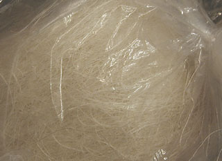
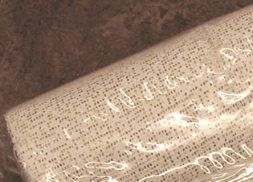

D'autres manières de faire ont pris le relais au XXème
siècle (notamment les résines), mais il reste toujours beaucoup à apprendre des techniques
décoratives qui peuvent aisément être transposées dans le domaine
artistique, déjà très riche en ce qui concerne l'utilisation du plâtre
en modelage et en moulage.
Le plâtre,
mode d'emploi et caractéristiques générales
Produit commun, c'est une simple poudre que l'on verse "en pluie"
dans l'eau pour
la rendre malléable. En principe, la quantité à verser pour obtenir une
plasticité moyenne est atteinte lorsque la poudre atteint ou dépasse
légèrement la surface. En réalité, la qualité du plâtre et surtout
l'emploi auquel on le destine justifient des dosages bien différents. Des tests
préliminaires sont donc indispensables pour cette raison et aussi parce qu'il
est utile d'avoir une idée de la masse à préparer en fonction du temps de
séchage et du volume ou de la surface à traiter.
Le mélange (soit le gâchage proprement dit)
peut ensuite être réalisé de différentes manières : à l'aide d'une
truelle, d'une spatule ou bien à la main. L'important est d'éviter que des
bulles ou des grumeaux se forment. Il existe des mixeurs automatiques,
mais étant donné le court temps de séchage du plâtre et les quantités
imposantes que ces machines permettent de traiter, celles-ci ne semblent trouver que
rarement des applications dans le domaine artistique.
L'étape de la "prise", c'est à dire de la cristallisation, à
bien distinguer du séchage, nécessite un repos total car la structure
moléculaire cristalline n'a pas la souplesse des macromolécules
de l'huile de lin, de l'acrylique ou des résines. Elle est donc sensible aux
chocs et à toute forme de mouvement. Certaines machines permettrent, par
vibration stable et homogène, d'obtenir un plâtre extrêmement dense,
pratiquement débarrassé de toute trace d'air.
La prise entraîne un dégagement de
chaleur.
C'est lorsque ce processus s'achève que se produit le véritable séchage : l'eau qui pouvait être
absorbée au niveau moléculaire a bien été intégrée, mais l'excédent doit
s'évaporer. Cela prend des heures ou des jours en fonction de la
dilution initiale.
Une fois sec, le plâtre ne peut être remis en
solution sans l'emploi de dissolvants comme les acides,
dont l'action est particulièrement destructrice.
Non
protégé, il est très fortement sujet à l'érosion (eau, vent sur la surface nue).
Aussi est-il déconseillé de placer durablement une oeuvre à l'extérieur,
sauf protection particulièrement renforcée et réfléchie. Cires,
gomme laque, huiles et
produits contemporains, parfois mixés, sont indispensables. Il est également
possible - mais insuffisant - de placer certains produits solidifiants et/ou
assouplissants dans la masse dès le début.
Le plâtre est dur
(plus dur que le carreau de plâtre),
modérément lourd mais surtout très cassant.
C'est aussi un liant, c'est à dire que l'on peut parfaitement lui
adjoindre un pigment (lire l'article consacré
à ce sujet). Sa couleur blanche peut être exploitée pour les
tons pastels ou rompus. Cette ressource est parfois employée en peinture
décorative. Elle peut parfaitement l'être aussi en sculpture, en amont
de l'application de patines.
Le plâtre à modeler peut être effectivement modelé, comme son nom
l'indique, mais aussi coulé dans un moule dans l'objectif de réaliser une
épreuve (enduire préalablement le moule de vaseline pour empêcher les effets
d'adhérence). Il permet également de réaliser un moule, une empreinte (souvent
à l'aide d'une bande plâtrée).
Le plâtre synthétique permet de réaliser des moules et des épreuves d'une
précision supérieure.
Assouplissant
Il est possible de rendre le plâtre un peu plus souple qu'il ne l'est par
nature. Les liants vinyliques peuvent être adjoint lors du gâchage ou dans
l'eau, juste avant. Ils
confèrent un peu de leur élasticité. Cette opération peut être utile
lorsqu'il existe un risque de fissure - sur de grandes surfaces, par exemple.
On évoque aussi la poudre de racines de guimauve ! Difficile de vérifier
cette information tant cette plante est devenue rare, comme la délicieuse
friandise que l'on en tirait (lire
encadré in La gomme arabique, l'aquarelle).
Retarder
la prise et le séchage
Cela est possible en premier lieu par une dilution supérieure (qui induira
une fluidité pas forcément souhaitée) avec de l'eau froide - l'eau chaude
produisant l'effet inverse -, mais aussi par l'adjonction d'une colle ou un produit assimilé :
liant vinylique, eau
gommée, dextrine, gélatine
si possible diluable à froid, etc. Une adjonction de l'ordre de 1 à 10% du poids du plâtre frais est envisageable, mais ce chiffre doit être
adapté au produit utilisé. De petites quantités de borax
sont conseillées par certains auteurs. Quel que soit le moyen utilisé, il vaut
mieux réaliser quelques test préalables et... ne pas s'attendre à un miracle.
Par ailleurs il faut signaler que le plâtre de Paris, bien pur et bien
calciné, est probablement le plus rapide à la prise. Le choix, lors de l'achat, n'est pas indifférent sous
ce rapport.
L'adjonction de poudres siliceuses ou alumineuses ou de ciments en contenant permettent
également d'allonger nettement la prise et le temps de séchage en principe
sans problèmes majeurs. Selon le cas, le résultat obtenu peut fortement varier
: le grain peut devenir trop grossier (ciment) ou bien trop fragile (silice
pure).

Modelage
Dans ce domaine, le plâtre n'est pas toujours d'un emploi aisé car il
sèche très vite - par rapport aux terres, par exemple. Pourtant, il fut
utilisé par les plus grands sculpteurs.
Il peut être combiné à du coton, de la filasse
(voir photo), du crin de cheval, de la fibre d'agave,
de la toile de jute ou de chanvre et pourquoi pas du bois ou tout autre
matériau fibreux apportant un certain maintien.
Il est fréquent de combiner plâtre et fibres sur des supports comme le grillage de fil de fer galvanisé.
Il vaut mieux, en effet, sauf intention délibérée, éviter d'employer des
métaux trop oxydables.
Autre combinaison : la combinaison plâtre + lait
de chaux. Le mélange serait durcissant.
L'objet résultant du modelage, une fois sec, peut être travaillé à l'aide de
différents abrasifs, limes, lames, ciseaux, riffloirs, etc.
En général, pour véritablement pouvoir modeler un plâtre, il vaut mieux
qu'il ne soit pas trop liquide. L'emploi sous forme plus liquide présente en
revanche l'intérêt de prendre la forme du support.
Il n'existe pas de règle générale dans le domaine du modelage du plâtre.
Chacun a ses préférences : noyau quasiment moulé à l'aide de toiles, de
panneaux divers, puis travaillé dans le sec ou le demi-frais ou bien, au
contraire, structures aériennes couvertes de quantités restreintes de
matériau modelable. Tout est permis, mais il demeure toujours un dilemme
entre solidité et liberté créatrive.
Les outils du modelage du
plâtre
Ils font l'objet d'une section spécifique dans l'article consacré aux
outils du modelage. Cliquer ici.
Moulage
et coulage
Différents types de moulages peuvent être réalisés à l'aide de plâtre.
* la prise d'empreinte directe. La matière du plâtre doit être assez
liquide, un peu comme une barbotine. Lors du séchage, un léger accroissement du volume assure une bonne
fidélité au modèle.
Le plâtre synthétique est le plus précis.
* l'aide à la prise d'empreinte. Sous différentes formes - notamment
la bande plâtrée -, une autre matière moulante (latex,
alginate, gélatines diverses) est "maintenue
par le plâtre", préservant la forme générale du moule.
Il n'y a guère d'autres spécificités : le moulage au plâtre est un
procédé classique qui rentre pleinement dans le "cas général" du
moulage.
Quant au coulage, il en va de même sauf sur les points suivants :
* un coulage de plâtre s'effectue avec une qualité très
liquide.
* un noyau central, escamotable ou non, peut être utilisé.
* du pigment peut être ajouté. Lire
l'article consacré au plâtre comme liant.
Il existe des "procédés d'ateliers" de grande valeur qui ne
peuvent être expliqués que dans le cadre d'un enseignement, mais les autres aspects du moulage et du modelage (procédé général, agents de
démoulage, etc.), sont exposés pour l'essentiel dans l'article Le
moulage. Tout enseignant ou artiste souhaitant ajouter des précisions
dans l'intérêt des internautes est chaleureusement invité à le faire en cliquant
ici.

La bande plâtrée
Il s'agit d'une sorte de bande de
gaze ou de tarlatane imprégnée de plâtre à modeler qu'il suffit d'imbiber d'eau pour la
rendre malléable.
Elle est souvent utilisée pour faciliter les prises d'empreintes réalisées
avec des substances molles (alginate, latex,
etc.). Très souvent, on utilise la même bande pour maintenir le moule lors du
coulage.
Il n'est pas exclu d'utiliser la bande plâtrée pour mouler grossièrement
un modèle (non vivant) d'assez grande taille. De même, on voit des sculpteurs
"modeler la bande plâtrée" sur une armature, s'aidant
éventuellement de filasse, de plâtre, de grilles de fil
de fer galvanisé ou de carton. C'est effectivement un moyen intéressant de
"faire du volume" sans surcharger l'oeuvre en poids. Et puis
tout est possible !
Staff, stuc
Lire les articles stuc et staff
du glossaire.
Gomme à plâtre
Il s'agit d'une sorte de porte-mine dont la mine est remplacée par de la
fibre de verre. C'est une puissante gomme bien adaptée au plâtre.
Recoller
un morceau brisé
C'est assez simple en principe : il
suffit d'utiliser une colle à bois. La trace du collage peut être atténuée
par une légère abrasion.
Certains mettent en oeuvre deux applications dont
la première tient lieu de bouchage des pores. En fonction de la porosité de la
surface ébréchée et de la nature de la colle, chacun jugera de l'utilité de
ce procédé.
Nettoyage
d'un plâtre
Il existe différents moyens de réaliser
cette opération, mais une question centrale demeure : quels effets peut
provoquer le nettoyage ?
Bien sûr, faire imbiber l'oeuvre dans l'eau
pendant des heures puis la passer à l'eau courante est une manière efficace de
la débarrasser de toute poussière, mais étant donné la réactivité à l'eau
des plâtres, il est évident que la sculpture risque fort de se trouver assez
altérée par un tel traitement. Il en va de même avec les procédés de
nettoyage à l'amidon ou toute autre colle.
En fait, tout plâtre laissé en
l'état, sans patine protectrice, ne peut être nettoyé si facilement. C'est un
travail de restaurateur.
Un plâtre patiné ne peut pas forcément être
lessivé avec du savon car la nature des patines est très variable et peut
être réactive. Seul le lavage superficiel à l'eau (la plus pure et la plus neutre
possible) est en principe sans risque. Connaître la nature de la patine est une
chose importante car cela permet de déterminer les traitements possibles.
Divers
Lire l'article tarlatane du
glossaire.
Retour
début de page